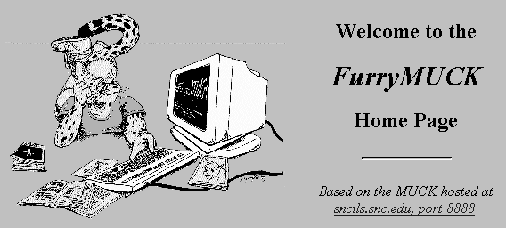

research.microsoft.com/vwg/papers/3DVW.htm by the Microsoft Virtual Worlds Group.
That site is long offline. This is a reproduction from the
Wayback Machine
for preservation purposes. The original images are not available.
March 23, 1995
Virtual reality is a computer interface in which the user feels immersed in an artificial space containing representations of data, programs and other users. Despite heavily funded research on immersive computer graphics, the most impressive and complete realization of VR has been multi-user text-based games called MUDs. The sense of immersion on a MUD is imagined rather than sensory, but fast 3D game graphics on PCs suggest that it is technically feasible to make a MUD-like virtual world with a visual interface. Ideally, graphics would make virtual reality more vivid and accessible without hindering the activity and community found on text-based systems.
Virtual reality and cyberspace are popular, compelling concepts. It is becoming feasible for users to interface with computers by immersing themselves in an artificial space containing objects of interest and other users. This is an extension of the current trend to allow users to access and manipulate data directly, hiding the intervening nuts and bolts of the computer itself. And since we live and dream in three dimensions, virtual reality seems to be a potentially natural and rich interface metaphor. Because other users are present in these spaces, social interaction and virtual communities are enabled.
Unlike the 2D desk-top interface, three-dimensional interfaces can create an experience of immersion. Under the right circumstances, users are able to mentally project themselves into a virtual space. One way this has been accomplished has been with 3D graphics; for example, the DOOM game. Another demonstration of immersion has been with MUDs, which are based purely on textual description. MUDs show that a rich, consistent presentation of a virtual space, even without sophisticated display technology, can be vividly experienced in the imagination of the user.
The idea of virtual reality is at least 50 years old. Vannevar Bush proposed many of the basic concepts in 1945, when computers were still in the vacuum-tube era. He suggested that vast amounts of information would be stored in machines and that people might interface with these machines in increasingly intimate ways, including direct induction of images on the optical nerve. Ivan Sutherland built the first head-mounted displays in the late 1960s. In the 1980s, science fiction stimulated a great deal of popular and professional interest by presenting provocative scenarios of virtual reality computer interfaces:
His first stop was Mass Transmit 3. Physically, MT3 was a two-thousand-tonne satellite in synchronous orbit over the Indian Ocean. ...in the Other Plane it was represented as a five-meter-wide ledge near the top of a mountain that rose from the forests and swamps that stood for the lower satellite layer and the ground-based nets.
— True Names, Vernor Vinge (1980)
The most literal-minded research on virtual reality has focused on the problems of display technology and geometrical modeling. Head mounted displays and $150,000 Silicon Graphics workstations make great demos and attract funding, but these efforts have failed to demonstrate an affordable or even a very interesting virtual world. The state of the art in computer graphics is not yet able to generate visually compelling content without enlisting the user's imagination. To do that, there must be a well-constructed, consistent model of a world on the other side of the display.
In 1978, the first text-based, multi-user adventure games, called MUDs, appeared; and by the late 1980s, these systems had evolved into the most sophisticated demonstration of virtual reality. MUDs represent a world of interconnected rooms, populated by active objects and avatars representing users. Actions and descriptions are displayed only via text, but users learn to develop a vivid experience of immersion in a virtual space as they read and type. As computer programs, MUDs represent an underground evolution of operating systems based on persistent, active objects. As virtual worlds, MUDs have encountered and solved many of the technical and social problems of how to immerse users, structure virtual space, and manage communities.

The most successful MUDs, such as FurryMUCK or LambdaMOO, are thriving communities of 9000 or more users. Some are still structured as violent adventure games requiring considerable time and effort, and others are purely social spaces where users are free to build and interact. Any effort to construct virtual worlds must not ignore the lessons offered by these text-based environments.
While MUDs demonstrate the importance of underlying structure versus display technology, it is also true that reading and typing text can be burdensome. World-Wide-Web browsers like Netscape and Mosaic have demonstrated that users enjoy building and exploring multimedia environments. Computer games like DOOM or Virtua Fighter have demonstrated that affordable computers can generate interesting 3D graphics. Users enjoy the immersiveness of 3D games, and the limited resolution of these graphics indicate the importance of having an underlying context of interest.
The technology seems to be present today, but many attempts to combine MUDs, the World Wide Web, and 3D graphics seem ill-conceived. ChibaMOO and some other MUDs have WWW interfaces that allow users to augment descriptions of objects with audio or GIF-formatted images; however, the web protocol itself seems fatally flawed by its inability to allow efficient interaction between clients and servers. The VRML project seeks to augment the web protocol with a geometrical modeling language for describing 3D spaces, but the lack of multi-user interaction makes this typical of many other display-centered approaches.
This report discusses and advocates an approach strongly grounded in MUD systems. The goal is to understand what makes MUDs successful and to suggest ways to augment that experience with graphics.
MUDs are the most tangible example of virtual worlds that we can find and study today. The "display technology" of MUDs is simply text, and so the experience of virtual space is imagined rather than sensory. Nevertheless, for a small, readerly audience of users, MUDs are rich and immersive. By avoiding the difficult problems of computer graphics, MUDs have been free to explore other aspects of virtual worlds; how to structure space, how to represent the user in the space, and how to deal with behavior and community.
MUDs began as multi-user text adventure games, but in 1987, Jim Aspnes at CMU made a critical change. He threw away the game-play aspect and simply allowed users to freely describe themselves, build on to the space and socialize with each other. His TinyMUD system spread across the internet like a virus and rapidly evolved into complex programmable systems. This section will discuss how social MUDs create a sense of space, how the user is embodied and active in these spaces, and how a sense of community is sometimes achieved.
The first impression a user has of a MUD is the space itself, and exploring it will set their sense of where they are and whether or not they want to stay. The structure of space in a MUD is similar to what was found in early single-user text adventure games, like Crowther's original ADVENT game. In addition to being multi-user, current MUDs are designed to allow on-line users to build onto the game.
In TinyMUD, complex worlds were constructed from four simple object types: rooms, exits, things and players. All objects had a set of basic properties such as a name, a full-length description, a contents list (what is in a room or what a player is carrying), and activation messages. Later versions of this program (e.g., TinyMUCK, TinyMUSE, and MOO) included full programmability of object behavior.
The virtual space itself is defined by a network of rooms interconnected by exits. The room object contained players and things. When a user entered a room (by moving their player object there), its description would be displayed, suggesting their presence in a place. On more advanced MUDs, room descriptions are more dynamic, showing players sitting on furniture for example. Text can evoke sights, sounds, smells and emotions:
Nocturne
Moonlight pours through an open window, as rain beats a steady patter on the balcony to the west. The floor is a patchwork of dark-coloured stones, the walls a solid ebon rock, gleaming with a lunar glow. The large bed lies unmade, soft pearl duvets shimmering with a chill draught, making it seem all the more seductive.
The user navigates by typing the names of exits that connect the room they're in to other rooms. In the example above, the description suggests the existence of an exit called "WEST" which would lead to the balcony. An activation message can be printed when the user moves, describing the journey. Exits also have a description which the user sees if they type "LOOK WEST".
Some rooms in a MUD become important gathering places where users can rendezvous or just hang around and meet people. The creators of a MUD may attempt to define these spaces, but it's hard to determine where users will choose to hang out. On the original TinyMUD, a village square was designed to be the social nexus, but in fact a room created by one of the users soon became the heart of the MUD:
THIS is the Rec Room!!!!
This large, darkened room has no obvious exits. A crowd relaxes on pillows in front of a giant screen TV, and there is a fully stocked fridge and a bar. By the TV is a black box with buttons marked with the numbers 2 through 13 and the letter U. A glass phone booth stands in the corner.
While the Rec Room says it has no obvious exits, in fact hundreds of exits connected this location to all the major sites on the MUD, and the owner of this room wielded the power to grant permission to link exits to other user's rooms. This room was a social meeting place, a navigational hub, and a source of political power for its owner. Even though there is no game play, part of the effort in being on a social MUD is to make spaces that will be admired and used.
Users navigate on a MUD by looking and going through exits. To illustrate this, here is a short transcript of a walk through an early TinyMUD called Islandia, which was shut down in November of 1990. User input is denoted in capital letters after a ">" prompt. Notice that some exits don't actually go anywhere! In the example below, "SIT" and the last instance of "WEST" are simply used to generate an evocative message:
>LOOK
Town Square
A large oak tree spreads its branches over a wooden kiosk covered with announcements in the grassy center of the square. Park benches line the sidewalks amidst flowery shrubs. You see the library to the northwest, the post office to the southeast, the homeless shelter to the southwest, and the hotel and convention hall to the northwest.>SIT
You sit down on a park bench.>LOOK WEST
The duck pond is to the west, and banners and pennants are beyond it. Lucky for you, there is a wooden bridge upon which you can cross, if you can get past the horrendous crowd on it.>WEST
You head for the bridge, hoping to push your way across.
Crowded Wooden Bridge
You stand in a huge crush of people trying to cross a nasty wooden bridge to the other side of the duck pond. There is a mermaid beneath the bridge, and a very nasty beggar whom you must pass to go west. Maybe he'll not notice you.>LOOK DOWN
It's a steep climb, but you could probably make it. Besides, there's the mermaid down there.>WEST
The slimy beggar gets in your way. Alms! Alms for a slimy beggar!>PAY
You drop a coin into the beggar's cup, feeling rather charitable, and he allows you to pass west with many cries of a thousand thanks, noble lord!
Things are objects that can be located in a room or carried by a user. On TinyMUD, they were mainly persistent objects that could be used as props, containers, food, clothing, gifts (rings, flowers, etc) or simply act as amusing ornaments like this strange object kept in the Rec Room:
icky thing
This icky thing is slimy and sticky and nasty and stinky. Dust and unidentifiable crud sticks to the outside. Your stomach lurches just knowing this thing exists in the same universe as you. Gross! You think you saw it move, just a tiny bit..
On the first social MUDs, things acting as notes were placed in a post office to send asynchronous messages to other users. In later MUDs, internal email, bulletin boards and newspapers were implemented and formed an important part of the community life on these systems.
In later MUDs, things (and other objects) could be programmed to respond to commands and to the environment. One of the most complex types of programmed objects is the automaton or "bot". Automatons range from simple "Eliza" programs that respond in a primitive way to speech to complex finite state machines that can mimic people or animals with changing moods and descriptions. They are used to simulate pets, waiters, chiming clocks, you name it.
Player objects (or "avatars" as some call them) represent the users themselves within the virtual space. In some sense, the player acts as a cursor, defining the current location and viewpoint of the user and the "room focus" where communication occurs. Players have a description that is viewable by other users, and people take great delight in designing the appearance of their player.
Many users seem to project themselves into a virtual space, in their own imagination, and inhabit the body defined by the player. By setting the description of a player, and subsequently controlling its behavior on the MUD, users construct a persona which may be quite different from their real-world selves.
Users on MUDs communicate with text messages, usually broadcast to the players contained within the same room. As in chat systems, users can simply talk, but an important style of communication that emerged on TinyMUD is emoting, where a player describes a gesture in the third person:
>SAY HELLO EVERYONE!
Bob says, "Hello everyone!"
Alice says, "Hi Bob. How's it going?"
>EMOTE SITS DOWN AND SIGHS.
Bob sits down and sighs.
Alice looks concerned.
Alice says, "What's wrong Bob?"
Emoting is a particularly interesting communication feature of MUDs that allows users to narrate about themselves in the third person, rather than communicate in the form of speaking (as in a chat system). Emoting is an important mechanism for MUD users to construct imaginary state about the world, an imaginary action or their state of mind.
Successful MUDs have evolved beyond being games or "interactive fiction" to become large, long-lived communities on the internet. FurryMUCK has about 6000 users and has been on-line since 1990. LambdaMOO came up about a year later and has about 9000 users today. Chat lines and bulletin boards are also popular, but they lack a virtual geography to explore or create mood, and chat lines even lack persistent player identities.
The Doblin Group, a prominent Chicago consulting firm, recently completed a million-dollar effort to research the concept of community. They condensed a mountain of published research into six properties measuring the strength of a community: effort, purpose, identity, organic, adaptive, freedom.
A problem with chat lines is the total lack of effort, obligation and responsibility on the part of the user. They log in to be amused and can be rude or simply disconnect the moment they get bored. MUDs are stronger in this area because the user has a persistent player and perhaps other artifacts they have built. Although the user is usually anonymous, they have an investment in their player, and they have an incentive to be popular and creative in order to get the most out of the MUD.
MUDs generally lack a strong sense of purpose, except as a game or meeting place for friends. Attempts to build MUDs around some goal like the MIT Media Lab's MOO, which was designed to bring researchers together, have generally not been very successful. Thus far, those MUDs have simply been too boring to attract and stimulate people.
Some MUDs, like FurryMUCK, have become large, long-lived communities. MUDs are free and organic, allowing users to socialize, explore and create. Because the space and the players have some persistence, these communities require some effort to make friends and invest in the development of an interesting player.
Unlike chat systems, MUDs support an explicit representation of virtual space. The user is situated in rooms or areas with descriptions, often via direct second-person address ("You stand in a huge crush of people..."). The space is populated by objects which can be looked at, picked up, carried around and dropped. It is also populated by avatars of other users who can also be looked at. Users navigate this space by typing directions to walk in, taking them from room to room.
MUDs represent the user as a player object in the virtual space, providing a persistent identity with a name and description. Users enjoy creating the appearance and behavior of a new persona, and viewing other players increases the sense of being immersed in an inhabited space.
Users communicate and gesture with text, and the most powerful communication device invented on MUDs is the emote. Emoting allows users to augment talking with third-person statements that indicate moods, thoughts and actions.
The technology exists today to create a more direct, sensory experience of immersion in a virtual space, but thus far, there has not been much experience with how to apply this technology. Text can be highly evocative, but there is much to be said about showing the user what a virtual space is like instead of making them read about it. People can absorb visual information rapidly and effortlessly, and moving rapidly through a space is thrilling.
The immersiveness of 3D graphics was repeatedly demonstrated in SIMNET, a large military war-game simulation system that combined flight and tank simulators in multi-user exercises. An interesting lesson learned from SIMNET was that the users felt immersed even though the display had a rather poor resolution. Soldiers still found the system thrilling to use, and they "saw through the technology", as one expert described. The 3D world was comprehensible and consistent, and the user's imagination could fill in the missing resolution.
The popular PC game, DOOM, was a revolutionary development that took graphics researchers and the game-playing public completely by surprise. This program allowed the user to walk through a 3D world, using only a 33 MHz 80486 processor and VGA frame buffer of a common PC.
DOOM is an example of full 3D graphics, where the user can walk anywhere and look in any direction. It is a multi-user game, and the players (and objects and monsters) are represented as 2D sprites. The user sees the world in first person, viewing the world through the eyes of their player.
What will people do in a virtual world, and how can graphics enhance their experience beyond what is found in MUDs? This is a poorly understood problem. We know what people do on MUDs: explore, build, play games, fantasize sexually, and chat. From this emerges friendships, feuds, politics, artwork, and community. It is difficult to even speculate how graphics or other media might enable entirely new experiences and behavior, hitherto unseen on MUDs. The immediate goal is to improve the quality of the user's experience.
In a recent survey of users on LambdaMOO, people reported that 57 percent of their time was spent socializing; which is to say, communicating with other users. Live audio would allow users to speak directly, although with more than two users communicating at a time, scrolling text enables complex multi-threaded conversations without the problems of users interrupting each other.
I believe emoting is too important and expressive to be disallowed. Users will find their own idioms of communication, and if emoting is not allowed, they may simply invent a convention of speech to implement it. I would advocate giving the user various channels of communication. Different commands could say or emote as in a MUD. Given various means of expression, no doubt new styles of communication will emerge.
MUDs can immerse users in an imaginary world described with text. They provide a persistent space that can be explored, changed and constructed by users. They create an embodiment of the user in the virtual world, into which they can project their agency and meet other users. The first MUDs were thought of as games or "interactive fiction", but they have evolved well beyond those notions into complex social environments.
Adding graphics to MUDs is technically feasible, and in theory it should be able to replace some of the burdensome aspects of reading text with a more direct sensory experience. Visualizing and exploring the virtual world is clearly enhanced by graphics, but adding a graphical component to communication is a subtler problem. First-person viewpoint, like DOOM, works well for exploration. When communicating, users may want to switch to a third-person view that shows them and their gestures in context with others.
Current graphical VR proposals like VRML have focused only on rendering and geometrical modeling, which may not be the hardest or most important problems. VR is more than a "3D document". In a distributed multi-user environment, it is important to make the models dynamic, allowing motion and updates to geometry. Difficult problems of distributed cache consistency and updating replicated data must be addressed in order for the system to scale up to large numbers of users. Finally, there is the problem of user interface design; allowing users to communicate with each other, navigate in the space and interact with objects. Experience with MUDs provides some clues to how virtual spaces should be structured and how users will interface with them.
About this paper: Don Mitchell wrote this in March 1995 as an internal Microsoft Research document.
It laid the intellectual foundation for what became the Virtual Worlds platform — the idea that
MUDs had solved the hard problems of virtual world design (space, embodiment, community), and that
3D graphics should augment rather than replace that foundation. Four years later, VWorlds v1.5
shipped with exactly this architecture: rooms, things, avatars, portals, properties, emotes, and
a text MUD client alongside the 3D renderer.
The original was published at research.microsoft.com/vwg/papers/3DVW.htm.
Archived at the Wayback Machine.